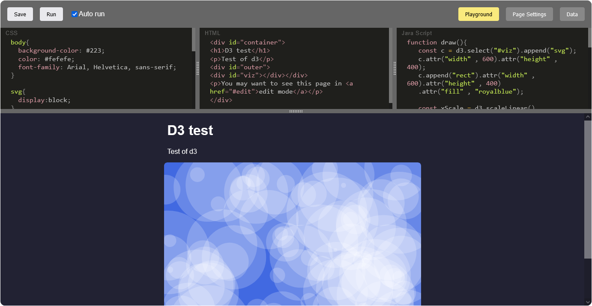

👿🎻
Imp Fiddle
Imp Fiddle is a JSFiddle-like, but local tool. This page is an Imp Fiddle itself. You may open it in edit mode to see Imp Fiddle in action. Scroll down to see more...

Features
- Live HTML, CSS and JS playground
- Fully local, no server required
- Results can be saved locally
- Set up custom HTML in HEAD, SEO tags and publish to your own hosting
- Can display only resulted HTML (like this page), without loading an editor. Only YOUR code.
- You may force view or edit mode as you wish